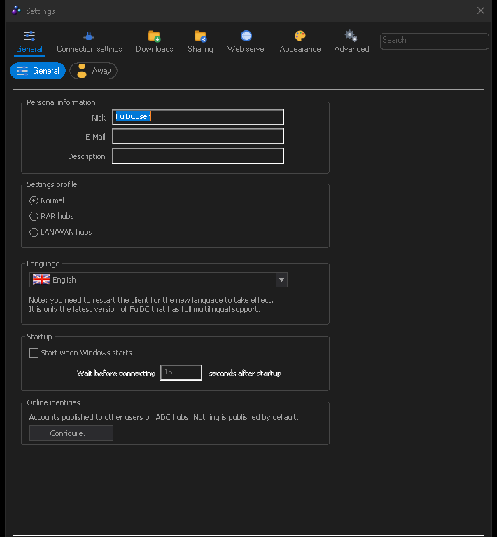

Settings tour
Seven categories, forty-odd pages. Here is what is in each of them.
Open settings with File → Settings or the toolbar button. FulDC++ does not use a settings tree: across the top is a row of category buttons, and under it a row of chips for the pages in the selected category.
Can't find an option? There is a search box in the settings dialog
(Ctrl+F). Type part of a setting's name and it filters pages across every
category. This is usually faster than remembering which of the seven categories something is
filed under.

General
| Page | What is there |
|---|---|
| General | Your nick, e-mail and description; the user profile (Normal / RAR hubs / LAN); interface language; start with Windows and how long to wait before doing so; and Online identities, where you can publish your accounts on other services for other users to see. |
| Away | Away mode: the away message, whether to go away automatically after an idle period, and whether to respond to private messages while away. |
Connection settings
| Page | What is there |
|---|---|
| Connection settings | Connectivity: automatic detection, active or passive mode, TCP/UDP/TLS ports, UPnP, and your external address. IPv4 and IPv6 are configured on separate tabs. This is the page that decides whether other people can connect to you — see Troubleshooting. |
| Speed & slots | Your reported connection speed, upload slots, extra slots and automatic slot allocation. |
| Limits & advanced | Upload and download speed limits, including a separate set of limits for a chosen time of day, and per-user download limits. |
| Proxies | SOCKS5 and HTTP proxy settings for outgoing connections. |
Downloads
| Page | What is there |
|---|---|
| Downloads | Where finished downloads go, and the temporary folder used while a file is incomplete. |
| Download locations | Rules sending particular file types to particular folders. |
| File preview | External programs for previewing a partially downloaded file, and the command lines to launch them with. |
| Priorities | How the queue is ordered, and the automatic priority system that balances bundles by size and progress. |
| Download options | Segmented downloading: how many segments per file and the minimum segment size. |
| Download scanning (FulDC++) | SFV and release-structure checks, an external virus scanner with its command line, timeout and size cap, what to do on a hit, the quarantine folder and excluded paths. |
Sharing
| Page | What is there |
|---|---|
| Sharing | Your shared folders and their virtual names, and your share profiles. |
| Sharing options | The skiplist, whether hidden and system files are shared, symbolic-link handling, automatic refresh intervals, and the maximum size of a file list FulDC++ will download from another user. |
| Hashing | Hashing speed limits and buffer size, plus hash database maintenance. |
Web server
A category of its own: the HTTP and HTTPS ports, the address to bind each to, a start/stop button with the live server state, and the list of administrator accounts. Accounts with restricted permissions are created from the web UI itself, not here. See Remote & web UI for what to do with it.
Appearance
| Page | What is there |
|---|---|
| Appearance | The big checkbox list: timestamps, join and leave messages, bolding of active tabs, tray behaviour, taskbar tabs, tabs on top, user list on the left, emoticons, BBCode, magnet handling, inline GIFs, multiline input and send buttons, the Explorer visual theme for lists, and date formats. |
| Dark theme (FulDC++) | Dark mode on or off, 52 presets and a custom palette editor. Applies live, without restarting. |
| Colors & fonts | Chat and list fonts, and the colour of every kind of chat message — your own, others', operators, private messages, favourites, timestamps. |
| … Progress bar colors | Colours and style of the transfer progress bars. |
| … List view colors | Row colours in lists, including the duplicate-file highlighting used in search results. |
| Sounds | A sound per event: private message, download finished, hub connected, and so on. |
| Toolbar | Which buttons appear, icon size, and icon packs, with a Reset to default. |
| Windows | Which windows open automatically at startup, and whether new windows pop up in front or open behind. Also the confirmation prompts — on exit, on removing a download, on closing all tabs. |
| Tabs | Tab strip position, width, grouping and colours. |
| Popups | Toast notifications: which events raise one, how long it stays and where it appears. |
| Highlight | Rules that colour or flag chat lines matching a word or pattern — your nick, a release name, anything. |
| AirAppearance | The workspace background image, duplicate-file colouring, how many lines of history a reopened chat shows, and the chat background image with its placement and blend strength. |
Advanced
| Page | What is there |
|---|---|
| Advanced | Auto-follow hub redirects, whether FulDC++ handles
magnet: and hub links, ADL search behaviour, partial sharing, and the
watchdog. |
| GeoIP | The IP geolocation database that puts country flags in the user list: whether to use it, where to fetch it and how often to refresh. |
| Auto-Recovery (FulDC++) | Automatic recovery after a crash or a hang: the hang timeout, cooldown, maximum restarts per hour and the startup recovery prompt. The crash reporting options are here too — whether to send reports, whether to include the system log and how much of it, deep dumps, an upload size cap, and buttons to create a report now or delete queued ones. |
| Backup (FulDC++) | Scheduled encrypted backups of your configuration, how many to keep and where to put them. |
| Experts only | Buffer sizes, what double-clicking a user does, the action taken on shutdown, share bloom-filter mode and log line counts. The name is a fair warning. |
| Logs | Which events are logged, the log folder, and the filename and format of each log type. |
| User commands | Your own right-click menu entries for users and hubs, built from chat command templates. |
| Encryption | Transfer encryption (TLS) mode and your client certificates. |
| Miscellaneous | Which media player the media toolbar drives and where it is installed, password protection for the client and tray, and the saved histories for search and other boxes. |
| Message filter | Rules that drop chat and private messages matching a pattern — the spam filter. |
| Chat triggers (FulDC++) | Keyword and regex automation: match something in chat, respond or act. Supports capture groups, away-only mode, per-hub scoping, fire statistics and import/export. |
| Search | Automatic search intervals, result limits and SUDP encrypted search results. |
| Search types | The file-type list used by every search window, and your own custom types. |
| Plugins | Installed native plugins, with Get plugins… to open the signed plugin catalogue. |
| Browser (FulDC++) | Settings for the built-in WebView2 browser tab: home page, downloads and which URL schemes it will follow. |
| Rich text & attachments (FulDC++) | Rich text on or off, composing in rich text by default, live preview, automatic fetching of inline pictures, temporary chat shares, maximum message size, link display length, and the caps on inline media size, count and resolution. The GIF search API key goes here, and so does the live list of your active temporary shares. |
Settings are saved when you press OK, and written to
Documents\FulDC++. If you ever
need to start clean, close FulDC++ and rename that folder rather than deleting it — it
contains your favourites and your queue as well as your settings.